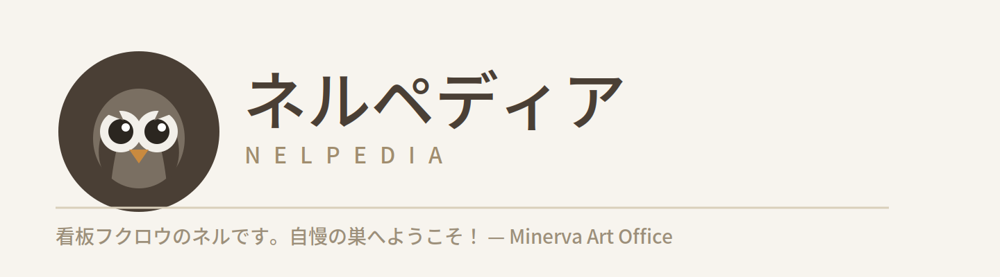

ネルペディア
ここは、無名のまま埋もれさせたくない人たちの記録を、家族の手でそっと残しておく場所です。
洋画家・依田純の絵、彼が学び、後に肩を並べて描いた仲間たち――吉田公、久保田九一、そして「来巣会」という小さな絵画グループ。誰もが知る名前ではありません。展覧会評に載ることもなく、多くは家族の記憶と、手元に残った古い年鑑や文集の中にだけ存在しています。
本サイトの入り口はGoogleサイト版ネルペディアにもあります。

ここは、無名のまま埋もれさせたくない人たちの記録を、家族の手でそっと残しておく場所です。
洋画家・依田純の絵、彼が学び、後に肩を並べて描いた仲間たち――吉田公、久保田九一、そして「来巣会」という小さな絵画グループ。誰もが知る名前ではありません。展覧会評に載ることもなく、多くは家族の記憶と、手元に残った古い年鑑や文集の中にだけ存在しています。
本サイトの入り口はGoogleサイト版ネルペディアにもあります。